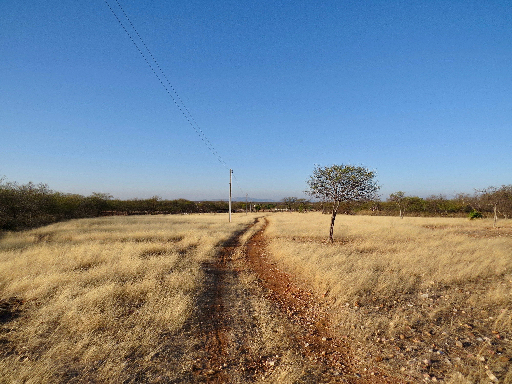

O agronegócio é um conjunto de atividades econômicas ligadas à pecuária, à agricultura, comércios e outros serviços relacionados, como transporte, armazenamento, processamento, distribuição e comercialização de produtos agropecuários.
Agronegócio Para o Mundo.
Podemos entender o agro, como sendo dividido em três grandes setores, antes da porteira, dentro da porteira, e depois da porteira, no setor antes da porteira tratamos sobre o fornecimento de insumos para a produção rural, os fabricantes de fertilizantes, defensivos químicos, equipamentos, etc.
E na terceira parte, estão os negócios relacionados ao mercado (compra e venda, oferta e demanda), transporte, beneficiamento de produtos agrícolas e a venda desses produtos para o consumidor final. Neste setor entra os frigoríficos, as indústrias têxteis, supermercados etc.
É fácil perceber agora que o agronegócio é uma área muito abrangente que cobre diversas áreas de estudo, e é uma peça fundamental da economia de qualquer país para ter o que vestir, ter o alimento na mesa das famílias.
Importância do agronegócio para a região semiárida.
A agricultura e à pecuária é o principal motor da economia do semiárido brasileiro, o que gera oportunidades de empregos, e com o emprego vem o ganho de renda para o sustento das famílias o que reduz à pobreza e a fome.
As principais atividades agropecuárias da região semiárida são a agricultura familiar, a pecuária extensiva a agricultura familiar é responsável pela produção de alimentos para o consumo local, como milho, feijão, mandioca e frutas. A pecuária extensiva é responsável pela produção de carne bovina, ovina e caprina.

O agronegócio não é apenas importante para a região semiárida, este é um setor muito importante para a economia mundial, pois fornece alimentos, fibras, energia e matéria-prima para diversos setores industriais. No Brasil, o agronegócio é a principal motor da economia, representa um terço do PIB nacional.
histórico de uruburetama em relação a agropecuaria
A atividade agropecuária em Uruburetama, no Ceará, tem uma longa história, remontando aos povos indígenas que habitavam a região antes da chegada dos portugueses. Esses povos praticavam a agricultura de subsistência, cultivando milho, mandioca, feijão e outras hortaliças.
Com a chegada dos portugueses, a atividade agropecuária em Uruburetama passou a ser desenvolvida em uma escala maior, com a introdução de novas técnicas e culturas. O café, por exemplo, se tornou uma importante cultura na região no século XIX.
No século XX, a atividade agropecuária em Uruburetama continuou a se desenvolver, com a introdução de novas culturas, como a soja e o algodão. Também houve um aumento na produção de gado, que se tornou uma importante fonte de renda para a região.
Atualmente, a agropecuária é a principal atividade econômica de Uruburetama. A região é responsável por uma parcela significativa da produção agrícola e pecuária do Ceará.
Algumas das principais culturas produzidas em Uruburetama são:
Soja
Algodão
Cana-de-açúcar
Milho
Feijão
Mandioca
Frutas
Legumes
A produção de gado também é uma atividade importante na região. Uruburetama é um importante polo de produção de leite, carne bovina e carne de frango.
A atividade agropecuária em Uruburetama enfrenta alguns desafios, como a seca, que é uma constante na região. No entanto, a região tem um grande potencial para o desenvolvimento da agropecuária, com terras férteis e clima favorável.